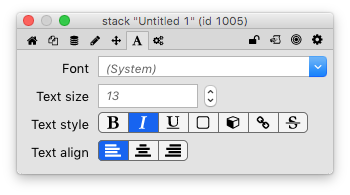
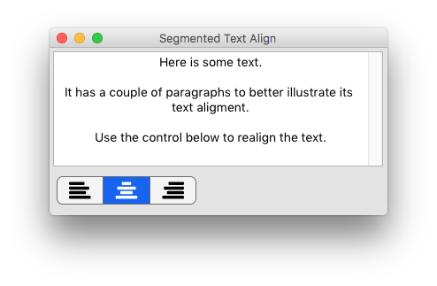
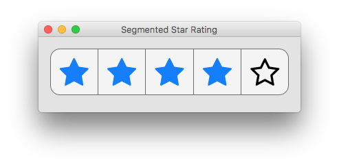

The segmented control shows several options (“segments”), and allows one or more of them to be highlighted by clicking on them. Each segment is identified either by a label, or an icon.
A segmented control widget can be created by dragging it out from the Tools Palette, where it appears with the following icon:
Alternatively it can be created in script using:
create widget as "com.livecode.widget.segmented"
One of the ways the segmented control is used in the LiveCode IDE is to control the alignment of text. You can find it used in that way on the Property Inspector’s “Text” page for the Field control, for example.

To build a similar control, create a new stack and drag a field and a segmented control onto it from the tools palette.
Open the Property Inspector for the segmented control, and set the “Display style” (the itemStyle property) to “icons”. This will display an icon for each segment, instead of a textual label. The segmented control is set up with the text alignment icons that you need by default.
Next, set the “Segment names” to “left”, “center” and “right”. This
itemNames property allows you to associate a value or tag with each
segment, separately from the text that’s displayed on the control. The
itemNames and itemLabels can be thought of as as values that have
meaning to the app and to the user respectively. The segment names and
labels are similar to the tags and labels used by LiveCode menus.
Finally, you need a script for the segmented control. When the user
changes the highlight of the segmented control by clicking on one of the
segments, it sends the hiliteChanged message, and your script should
handle this message to change the field’s textAlign property.
on hiliteChanged
set the textAlign of field 1 to the hilitedItemNames of me
end hiliteChanged

By adding some script support, you can use the segmented control to create some controls that would be quite difficult to do using “classic” LiveCode controls. For example, you can build a “5 star rating” control quite quickly. When you click on a segment, the control will display filled stars for the segment you clicked on and all the segments to the left, and empty stars for all the segments to the right.
Create a new segmented control, set it to display icons, and give it 5
segments. Next, go to the “Icons” pane of the Property Inspector. Set
all the “Segment icons” (the itemIcons property) to the “empty star”
icons, and all the “Hilited segment icons” (the hilitedItemIcons
property) to the “star” icon. You should now be able to click on
individual segments to have them turn from an empty star to a full star.
To get the star rating to work properly, however, it’ll be necessary to
allow multiple segments to be highlighted. You can do this on the
“Basic” pane of the Property Inspector by enabling the “Multiple
hilites” (multipleHilites) property.
The colors can be changed on the “Colors” pane of the Property
Inspector. Change the “Hilited segment label color”
(hilitedTextColor) to blue, and the the “Selected segment color”
(hiliteColor) to the same grey background colour as used for the
“Segment color” (backColor).
The final part is to add a script that hooks this all together, and
makes sure that the correct segments are highlighted when the user
clicks on the control by responding to the hiliteChanged message. The
hilitedItems property contains the segment numbers that are
highlighted.
The script first checks which segment was clicked, and then creates a
new value for the hilitedItems that includes all the segments up to
and including the clicked segment.
local sRating
on hiliteChanged
local tHilited
-- Find the rightmost item that changed. This is
-- the segment that the user clicked
put the hilitedItems of me into tHilited
repeat with tSegment = the itemCount of me down to 1
if tSegment is among the items of tHilited then
if tSegment > sRating then
put tSegment into sRating
exit repeat
end if
else
if tSegment <= sRating then
put tSegment into sRating
exit repeat
end if
end if
end repeat
-- Highlight all the segments up to and
-- including the one that was clicked
local tNewHilite
repeat with tSegment = 1 to sRating
put tSegment & comma after tNewHilite
end repeat
-- Remove trailing comma
delete char -1 of tNewHilite
set the hilitedItems of me to tNewHilite
end hiliteChanged

There are many other good uses for the segmented control: you can use it for switching between cards, as a row of options that can be toggled, or possibly even to create an upvote/downvote control in a forum comment-viewing app.